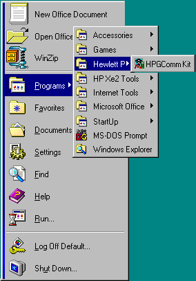

Once HPGComm has been installed it can be started using the normal Windows Start menu. The installation process creates a folder called "Hewlett Packard" containing a shortcut to the program.
When the program starts, the first thing it does is to check access to the serial (COM) port. The default port is COM1 and if this is already in use by, for example, a mouse or game device then a message will appear telling you that the port is unavailable and asking you to choose another.

When the program runs, use the list provided to make your choice.
The simplest way to check whether your connection is working is to perform a screen capture.
See the section on Trouble Shooting if you cannot establish a connection.